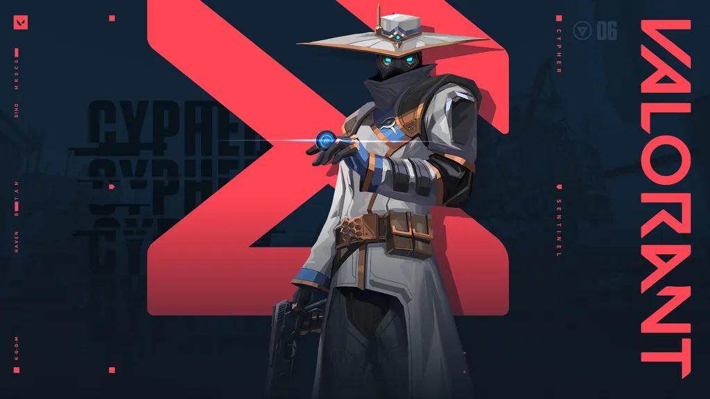
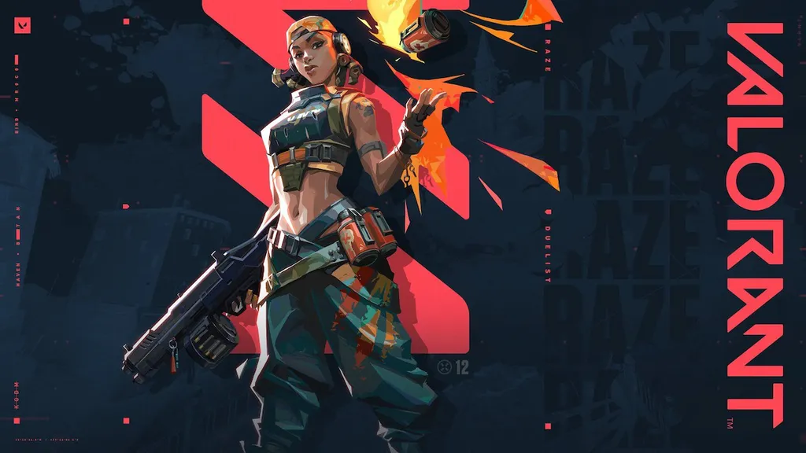

Agentes
Astra
 Origem: Gana
Nome: Efia Danso
Função: Controladora
Origem: Gana
Nome: Efia Danso
Função: Controladora
Seus poderes são relacionados a energias cósmicas. Não se sabe muito bem como Astra os adquiriu; aparentemente, ela os obteve ao entrar em um lago, que fica dentro de uma cratera com mais de um milhão de anos.
O gameplay difere muito dos outros: a personagem entra em um plano astral, vê o mapa do alto e adiciona estrelas onde bem entender. Depois, ela pode ativar essas estrelas para atordoar os inimigos, criar fumaças ou criar campos gravitacionais que puxam os jogadores e explodem. Sua ult divide o mapa em dois lados, bloqueando a visão e abafando o som.
(Voltar)
Breach
Origem: Suécia
Nome: Erik Torsten
Função: Iniciador
Breach e seus familiares eram criminosos na Suécia. No entanto, toda a família foi presa, menos ele — o juiz sentiu pena por ele ter os braços amputados. Com a ajuda de Raze, construiu braços mecânicos poderosos, utilizados em batalha até hoje.
Seus poderes podem cegar ou atordoar os inimigos. Ele também consegue disparar uma carga de fusão que atravessa paredes e causa dano. Sua ult causa um grande terremoto que estonteia todos que estiverem na área.
(Voltar)
Brimstone
 Origem: Estados Unidos
Nome: Liam Byrne
Função: Controlador
Origem: Estados Unidos
Nome: Liam Byrne
Função: Controlador
Primeiro membro e líder do Protocolo Valorant, Brimstone é um soldado veterano dos Estados Unidos. Como é o mais velho do grupo, é apelidado de “cachorro velho” pelos companheiros.
Ele lança granadas incendiárias, fumaças e um sinalizador estimulante. Sua ult é um ataque de laser que vem dos céus, que causa dano a todos que estiverem no seu alcance.
(Voltar)
Chamber
Origem: França
Nome: Vicent Fabron
Função: Sentinela
O francês Chamber já trabalhou com a força militar da França, foi um designer de armas da Kingdom e até um atirador de elite. Ele já conversou com o seu "eu" espelhado do outro mundo, e os dois firmaram algum tipo de acordo. Ele entrou para o Protocolo VALORANT com um objetivo escuso, e nem Brimstone nem Viper confiam nele.
O personagem é extremamente habilidoso com armas. Ele pode equipar uma pistola pesada e posicionar duas âncoras de teleporte, úteis para sair de situações perigosas. Ele também consegue posicionar armadilhas que deixam os inimigos lentos. Sua ult é um fuzil de precisão que, quando abate um inimigo, cria uma armadilha que reduz a velocidade de quem estiver dentro.
(Voltar)
Cypher

Origem: Marrocos
Nome: Amir El Amari
Função: Controlador
Cypher é um personagem misterioso, que trabalhava como “vendedor de informações” em Marrocos: ele está sempre coletando informações e descobrindo segredos, tanto dos inimigos quanto dos aliados. Para ele, “cada batalha é como um tabuleiro de xadrez”.
Suas habilidades consistem em uma jaula que bloqueia a visão e reduz a velocidade, uma câmera de vigilância e um fio-armadilha. Sua ult revela a localização de todos os oponentes restantes.
(Voltar)
Fade
 Origem: Turquia
Nome: Desconhecido
Função: Iniciador
Origem: Turquia
Nome: Desconhecido
Função: Iniciador
Fade procura uma pessoa muito importante para ela. No começo, ela suspeitava que essa pessoa havia sido sequestrada pelo Protocolo VALORANT e, por isso, os atacou. Após ser capturada e interrogada, descobriu-se que tudo havia sido um engano. Foi então que ela descobriu a existência de outros mundos e entrou para o time.
A personagem é capaz de brincar com o medo das pessoas, e é útil para encontrar inimigos e abrir caminhos. Suas habilidades são um orb que rastreia e prende oponentes, uma assombração que marca os inimigos próximos e um monstro que causa cegueira temporária. Sua ult rastreia todos os inimigos afetados e causa surdez e deterioração.
(Voltar)
Jett
 Origem: Coreia do Sul
Nome: Sunwoo Han
Função: Duelista
Origem: Coreia do Sul
Nome: Sunwoo Han
Função: Duelista
Jett é uma das personagens mais fortes do game — e uma das favoritas dos jogadores do cenário competitivo. A personagem trabalhava como uma chef de cozinha em Seoul, mas se envolveu em um acidente que causou uma “tempestade esquisita” de vento, que destruiu todo o prédio, forçando-a a fugir.
A agente consegue dominar o vento. Suas habilidades consistem em voar para o alto e para os lados em alta velocidade, permitindo-a alcançar lugares estratégicos e fugir de situações arriscadas. Ela também lança fumaças. Sua ult é um conjunto de facas super-rápidas e precisas, capazes de matar instantaneamente.
(Voltar)
KAY/O
 Origem: Linha do tempo alternativa da Terra
Nome: nenhum
Função: Iniciador
Origem: Linha do tempo alternativa da Terra
Nome: nenhum
Função: Iniciador
KAY/O é um robô que veio de um futuro alternativo, de outra linha do tempo. Ele foi criado por humanos para lutar contra radiantes que, nesta outra Terra, estavam em guerra contra a humanidade.
Seu principal poder é o de suprimir as habilidades dos inimigos. Ele também pode soltar granadas que cegam ou causam dano a inimigos. Sua ult suprime inimigos e aumenta seu poder de ataque; caso seja abatido, ele ainda pode ser levantado por um aliado.
(Voltar)
Killjoy
 Origem: Alemanha
Nome: Klara Böhringer
Função: Sentinela
Origem: Alemanha
Nome: Klara Böhringer
Função: Sentinela
Nomeada ao prêmio Inventor Distinto, Killjoy se tornou líder de Pesquisa e Desenvolvimento da Kingdom aos 18 anos. Ela é uma agente extremamente habilidosa com máquinas, e consegue defender um local muito bem sozinha.
Entre seus artefatos, estão um robô de alarme, uma torreta que atira nos inimigos no campo de visão de 180º e uma granada explosiva. Sua ult é um dispositivo capaz de prender inimigos em um vasto raio de alance.
(Voltar)
Neon
 Origem: Filipinas
Nome: Tala Nicole Dimaapi Valdez
Função: Duelista
Origem: Filipinas
Nome: Tala Nicole Dimaapi Valdez
Função: Duelista
Neon é uma agente capaz de controlar a bioeletricidade, e foi convocada ao Protocolo VALORANT para ajudar na construção de um teletransportador entre as duas Terras. Ela é jovem, e já atuou na K/SEC, uma divisão de ajuda humanitária da Kingdom — a maior megacorporação do universo de VALORANT, que quer extrair o poder da radianita.
Como duelista, é especialista em combates diretos. Ela pode lançar raios de energia que causam dano, abrir duas paredes que tapam a visão externa e correr rapidamente.Sua ult é um raio elétrico preciso e mortal.
(Voltar)
Omen
 Origem: Desconhecido
Nome: Desconhecido
Função: Controlador
Origem: Desconhecido
Nome: Desconhecido
Função: Controlador
Omen é um personagem misterioso, dono de inúmeros codinomes antes dos acontecimentos de VALORANT.
O personagem pode cegar os inimigos, lançar fumaças e se teletransportar a curtas distâncias. Sua ult permite que ele se teletransporte a qualquer lugar do mapa
(Voltar)
Phoenix
 Origem: Reino Unido
Nome: Jamie Adeyemi
Função: Duelista
Origem: Reino Unido
Nome: Jamie Adeyemi
Função: Duelista
Um dos personagens mais estilosos do game, Phoenix também é um dos mais “esquentadinhos”. Ele estudava teatro antes de adquirir seus poderes radiantes; no entanto, foi suspenso por algum motivo desconhecido.
Phoenix consegue cegar inimigos e lançar bolas e paredes de fogo, que causam dano e também limitam a visão. Sua ult lhe dá uma vida extra por tempo limitado.
(Voltar)
Raze

Origem: Brasil
Nome: Tayane Alves
Função: Duelista
A brasileira de VALORANT, diretamente de Salvador, Bahia! A personagem é uma engenheira extremamente carismática e perigosa, que adora explosivos e tintas. Ela tem uma forte repulsa ao trabalho da Kingdom, e conseguiu fazer com que a corporação deixasse de atuar na sua cidade natal.
Entre suas habilidades, estão uma carga de explosivos que gruda em superfícies — e pode impulsioná-la para frente ou para cima —, granadas e um robô que avança em linha reta. Sua ult é um lança-míssil, capaz de causar morte instantânea com um tiro.
(Voltar)
Reyna
 Origem: México
Nome: Zyanya Mondragón
Função: Duelista
Origem: México
Nome: Zyanya Mondragón
Função: Duelista
Reyna é uma personagem sombria, que rejeita a tecnologia e a própria humanidade. Ela também gosta de matar, e se alimenta das almas dos inimigos. Antes de se tornar uma agente, ela construiu um santuário para ajudar pessoas a escaparem das atividades da Kingdom.
A personagem domina o combate individual. Quando abate um inimigo, ela pode se curar completamente ou ficar invisível temporariamente. Ela também consegue cegar inimigos. Sua ult a cura e aumenta sua velocidade de disparo, sendo renovada quando faz um novo abate.
(Voltar)
Sage
 Origem: China
Nome: Ling Ying Wei
Função: Sentinela
Origem: China
Nome: Ling Ying Wei
Função: Sentinela
Descrita como uma “verdadeira fortaleza”, Sage é uma monja com origens ligadas à província de Shaanxi, na China. A agente atua como suporte na equipe, e costuma falar frases encorajadoras para acalmar os colegas.
Seus poderes são curar aliados, reduzir a velocidade dos inimigos e criar barreiras. Sua ult permite que ela ressuscite um aliado morto.
(Voltar)
Skye
 Origem: Austrália
Nome: Kirra Foster
Função: Iniciador
Origem: Austrália
Nome: Kirra Foster
Função: Iniciador
Skye é uma personagem defensora da natureza. Ela cresceu em uma fazenda e, por isso, acredita no “trabalho duro”. Ela passou anos lutando contra a atuação da Kingdom na Austrália, o que lhe rendeu o apelido de “Grande Recuperadora”. No início, Skye não queria se juntar ao Protocolo VALORANT porque queria defender a sua terra natal; entretanto, mudou de ideia ao descobrir que existem outras Terras passando pelos mesmos problemas.
A agente é útil tanto para abrir caminho quanto para dar suporte. Ela pode controlar um lobo-da-tasmânia, que coleta informações e causa dano aos inimigos, e um falcão, que cega todos que o olharem. Ela também consegue curar aliados em um determinado campo de visão. Sua ult dispara três rastreadores que localizam os inimigos mais próximos.
(Voltar)
Sova
 Origem: Rússia
Nome: Alexander (Sasha) Novikov
Função: Iniciador
Origem: Rússia
Nome: Alexander (Sasha) Novikov
Função: Iniciador
Sova nasceu na cidade de Severomorsk, em Murmansk Oblast, na Rússia. Ele é um arqueiro habilidoso, com um olho direito mecânico. Sua personalidade é calma e serena: ele valoriza a família — principalmente a vó —, o trabalho em equipe e a honestidade.
O personagem pode atirar uma flecha de choque, uma flecha que localiza os inimigos e um drone. Sua ult é um arco que dispara três longos ataques, que ultrapassam paredes.
(Voltar)
Viper
 Origem: Estados Unidos
Nome: Sabine Callas
Função: Controladora
Origem: Estados Unidos
Nome: Sabine Callas
Função: Controladora
Viper é uma personagem rancorosa e dona de um passado sombrio. Segundo seu dossiê, ela foi a mais jovem ganhadora do Prêmio R. Francis, vencedora do Prêmio de Inovação Denton Oustanding e a primeira Diretora Científica do Conselho de Assessores da Kingdom.
A principal arma de Viper é o veneno: ela pode lançar fumaças, paredes e líquidos que deterioram a vida dos inimigos. Sua ult é uma nuvem gigantesca de veneno, que reduz a visão e a vida dos oponentes.
(Voltar)
Yoru
 Origem: Japão
Nome: Ryo Kiritani
Função: Duelista
Origem: Japão
Nome: Ryo Kiritani
Função: Duelista
Criado em Tóquio, no Japão, Yoru é um Radiante, cujo poder é abrir fendas no tecido da realidade. Isso graças a uma máscara do Período Edo, a qual Yoru roubou do Laboratório de Pesquisas da Kingdom em Icebox. Ele quer conhecer mais sobre suas raízes e está buscando informações sobre os seus ancestrais.
O agente pode cegar os inimigos e se teletransportar a longas distâncias pelo mapa, abrindo brechas para ataques surpresa. Ele também pode lançar uma cópia falsa dele mesmo que, ao ser atingida, causa um clarão. Na ult, ele equipa sua máscara e viaja por entre dimensões, sem ser visto pelos inimigos.
(Voltar)
Referências
Canaltech